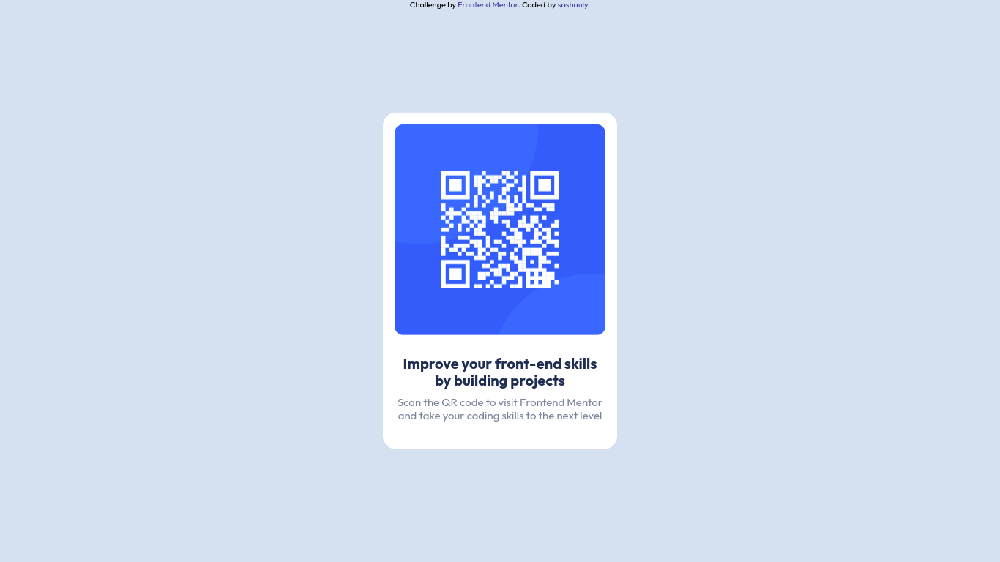

qr-code-component
Frontend Mentor - QR code component solution
This is a solution to the QR code component challenge on Frontend Mentor. Frontend Mentor challenges help you improve your coding skills by building realistic projects.
Table of contents
Overview
Screenshot

Links
- Solution URL: This repo
- Live Site URL: GitHub Pages
My process
Built with
- Semantic HTML5 markup
- CSS custom properties
- Flexbox
- CSS Grid
What I learned
I learned more about centring div inside div. And mostly how hard it is to make a layout without Figma by my side!